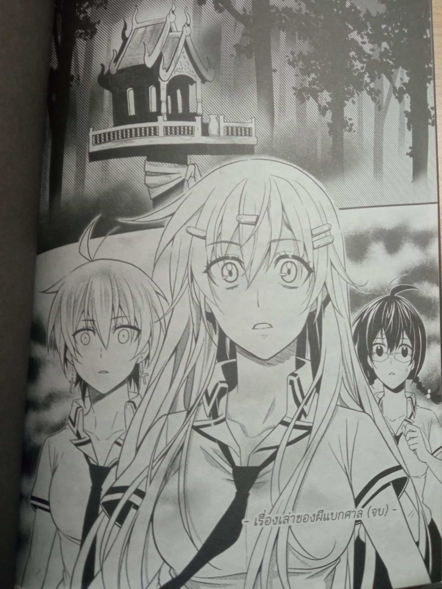
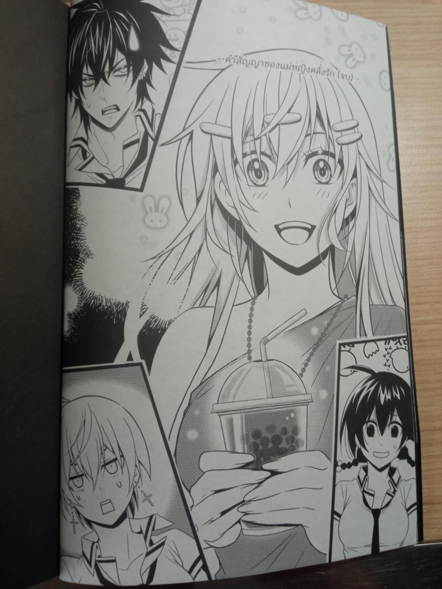

เมื่อไม่กี่วันก่อน เราพยายามจัดกองหนังสือเพื่อหาที่วางหนังสือล็อตใหม่จากการไปเดินงานหนังสือ จนมาพบกับ "การิน ปริศนาคดีสยอง"เรื่องเล่าของผีแบกศาลกับตำนานแม่หญิงคลั่งรัก ซึ่งเป็นนิยายเรื่องสั้นลำดับที่สี่จากชุด การิน ปริศนาคดีสยอง
ถ้าฟังจากชื่อก็คงเดาได้ไม่ยากว่ามันเป็น หนังสือแนวเขย่าขวัญ ที่นำเสนอประสบการณ์สุดสยอง,ทิ้งปมปริศนา,บอกเล่าความโหดร้ายและความน่าสะพรึงของบางอย่าง แต่เดี๋ยวก่อน ในความมืดมิดนั้นก็ยังมีความมุ้งมิ้งที่คอยสร้างสมดุลให้กับเนื้อเรื่องอยู่
การิน ถือเป็นหนึ่งในนิยายลูกรักที่เราเคยอินหนักมากในช่วงหนึ่ง และยังคงตราตรึงจนถึงทุกวันนี้ จุดเด่นอยู่ที่การนำเสนอเนื้อหา มันเหมือนกับการกินดาร์กช็อกโกแลต ช่วงแรกรสขมที่เข้มข้นจะเด่นชัดอยู่โพรงปาก มันอาจไม่น่าอภิรมย์สำหรับบางคน แต่หลังจากอยู่กับมันซักพัก เราจะพบความหวานที่ติดอยู่ปลายลิ้น
ใช่ค่ะ นิยายรสสยองที่เจือกลิ่นของความรักแบบบางๆ
พระเอกของเรื่อง การิน…เด็กหนุ่มผู้คลั่งไคล้ศาสตร์อาถรรพ์ แต่ไร้ซึ่งสัมผัสในสิ่งที่เหนือธรรมชาติ เขาเป็นคนที่มีใบหน้าที่หล่อเหลา รูปร่างดี แถมด้วยฐานะลูกผู้อำนวยการโรงเรียน แต่เพราะบุคลิกมือมน กับพฤติกรรมที่เอาแต่หมกหมุ่นอยู่กับเรื่องลี้ลับ จึงถูกมองว่าเป็นตัวประหลาด ทำให้เป็นที่รังเกียจของสังคม แม้จะฟังดูโดดเดี่ยว แต่เขาไม่สนใจหรอก เขายึดมั่นในอุดมการณ์ของตัวเอง และเขาจะทำทุกวิถีทางเพื่อให้ได้ในสิ่งที่เขาต้องการ ขนาดพ่อยังห้ามเขาไม่ได้ วันหนึ่งที่เขากำลังเบื่อหน่ายกับชีวิตแสนธรรมดา ลัลทริมา นางเอกของเรื่อง ก็ย้ายเข้ามาในโรงเรียน เธอเป็นเด็กสาวหน้าตาน่ารัก ยิ้มสวย มีจิตใจบริสุทธิ์ อ่อนโยน เป็นมิตรกับผู้อื่น ชอบช่วยเหลือคน นิยามของคำว่า แม่พระตัวจริง แต่คนในโรงเรียนกลับเรียกเธอว่า ยัยแม่มด เพราะเธอเป็นผู้มีญาณอาถรรพ์ ที่คอยดึงดูดและกระตุ้นให้เกิดเรื่องร้ายๆ เธอเกลียดชังมันและพยายามมีชีวิตที่ปกติสุข แต่ทุกอย่างจบสิ้น เมื่อการินรับรู้ถึงความพิเศษนี้
ครั้งนี้ เขาและเธอ ต้องมาพัวพันกับเรื่องราวของปริศนาความสยองของ "เหล่าผู้หลงทาง" ที่ไม่อาจหลุดพ้นจากสิ่งที่ยึดติดไว้ได้ ทั้งที่บ่วงนั้น ก็เป็นสิ่งที่พวกเขาสร้างมันขึ้นมาเอง!!!
เสียงเล่าลือกล่าวขานถึงผีแบกศาลชุดแดงแพร่ลามไปทั่วโรงเรียนนิศาพาณิชย์ทุกคนต่างมุ่งความสนใจไปที่ ‘ศาลเก่าที่ผุดขึ้นมาหลังโรงเรียน’
" การตั้งศาล มีทั้งเพื่ออัญเชิญสิ่งศักดิ์สิทธิ์มาอารักษ์พื้นที่ กันไม่ให้เหล่าผีตายโหงอาละวาด หรือแม้แต่สะกดบางอย่างเอาไว้ "
เรื่องเล่ายิ่งขยายวงกว้างเมื่อเกิดเหตุประหลาดกับผู้ที่กล้าลบหลู่ รองผู้อำนวยการตกเป็นเหยื่อเซ่นคำสาปผีแบกศาล ราวกับเป็นคำเตือนว่าห้ามเข้าไปยังเขตหวงห้าม และคนที่ตกเป็นผู้สงสัย ว่าเป็นสาเหตุในเหตุการณ์ครั้งนี้ ย่อมหนีไม่พ้นลัลทริมา แม่มดประจำโรงเรียน
เพื่อพิสูจน์ว่า ข้อกล่าวหานั้นไม่เป็นความจริง เธอกับเพื่อนๆ จึงตัดสินใจไขปมปริศนา ของผีแบกศาล จนจับได้ว่าลุงภารโรงที่เพิ่งเข้ามา เป็นคนกุข่าวเลือเรื่องผีแบกศาลขึ้นมา แต่เขาจะทำแบบนั้นไปทำไม ขณะที่ทุกคนกำลังสับสน การินก็เข้ามาเปิงโปง ว่าแท้จริงแล้วลุงคนนี้ คือฆาตรกรต่อเนื่อง แถมยังเป็นโรคจิตอีกด้วย สาเหตุที่เขาสร้างข่าวลือ ผีแบกศาล ก็เพื่อกันทุกคนออกไป จากนั้นจึงเข้ามาทำลายหลักฐานที่ซ่อนไว้เมื่อสิบปีก่อน นั่นคือบรรดาศพของเด็กๆที่น่าสงสาร
เมื่อความจริงถูกเฉลย เขาก็ไม่ได้มีท่าทีหวาดกลัวแต่อย่างไร กลับภูมิใจในความฉลาดของตนเองด้วยซ้ำ ที่เป็นแบบนั้น ก็เพราะความมั่นใจในการก่อคดีมาหลายต่อหลายครั้ง แต่ก็ไม่เคยถูกจับได้ซักครั้ง ตำรวจค้นหาไปทั่วป่าแต่ก็ไม่พบแม้แต่ศพหรืออาวุธสังหาร ทั้งที่ความจริงมันก็ปรากฏอยู่ตรงหน้าอย่างทนโท่ ฆาตรใช้ผ้าสามสี เป็นอาวุธสังหาร เมื่อรัดคอเหยื่อเสร็จก็เอาผ้าไปผูกไว้ที่เดิม ส่วนศพก็ฝังเอาไว้ใต้ศาล แล้วเอาตุ๊กตามาวางกลบเกลื่อน
ตอนที่เราอ่านมาถึงฉากนี้ ก็ตกใจมากเหมือนกัน ใครจะคิดว่าจะมีคนกล้าใช้ผ้าสามสีเป็นอาวุธสังหาร แล้วยังไปเอามาจากศาลอีก ปฎิเสธไม่ได้เลยว่าความเชื่อบางอย่างก็ฝังแน่นจนกลายเป็นความงมงาย มันทำให้เรากลายเป็นคนไม่มีเหตุผล เอาแต่ยึดติดอยู่กับสิ่งเดิม ๆ มองข้ามบางอย่าง จนทำสิ่งผิดพลาด แต่เราก็ยังคงบอกให้ตัวเองเชื่อสิ่งเหล่านั้น เพียงเพราะมันเป็นสิ่งที่ถูกถ่ายทอดมาจากคนรุ่นก่อน
เขาคิดจะฆ่าปิดปากทุกคน การินใช้อาคมถ่วงเวลาเอาไว้ จังหวะเสี่ยงเป็นเสี่ยงตา ตำรวจก็เข้ามา ฆาตรกรที่กำลังจนตรอก จับลัลเป็นตัวประกัน ตอนนั้นเองที่ญาณอาถรรพ์ของเธอไปกระตุ้นเหล่าดวงวิญญาณที่ตายไปด้วยความแค้น กลับมาเอาคืนลุงภารโรง ก่อนที่เขาจะสิ้นใจ ลัลก็ใช้ญาณอาถรรพ์หยุดพวกเขา เพราะไม่อยากให้พวกเขาสร้างเวรสร้างกรรมผูกติดกันไปถึงชาติหน้า เธอรู้ว่า ลึกๆ พวกเขาแค่ต้องการอิสระ ปลดปล่อยตัวเองจากที่แห่งนี้
ปริศนาที่สองได้มาเยือนเมื่อกลุ่มของลัลทริมา ต้องไปจัดบอร์ดนิทรรศการ ณ ศูนย์วัฒนธรรมและการท่องเที่ยวแห่งชาติ และที่แห่งนั้นเองที่พวกเขาได้พบกับ ‘วิญญาณแม่หญิงคลั่งรัก’ วิญญาณดวงนั้นเข้ามาสิงร่างของลัลทริมา แล้วเรียกการินว่า ‘คุณพี่ริน’ แม้ว่าเจ้าตัวจะปฏิเสธหัวชนฝาก็ตาม ช่วงแรกหล่อนยังคงดึงดั้น เชื่อว่าการินนี่แหละ คือคนรักของหล่อน แต่เมื่อได้ได้ลองตั้งใจ พิจารณาดูจริงๆ ก็พบว่า เป็นอีกคนที่มีใบหน้าคล้ายคลึงกันเพียงเท่านั้น
ทุกคนแทบไม่อยากเชื่อว่า ดวงวิญญาณจะเข้าสิงคนได้ตอนกลางวันแสกๆ หลังจากปรึกษากัน ก็ได้ข้อสรุปว่า หนทางที่จะให้หล่อนออกจากร่างของเพื่อน คือ การช่วยตามหาคนรักที่พลัดพราก ด้วย ผอบ ซึ่งเป็นของแทนใจ ที่ให้ไว้ก่อนจากกัน เป็นเบาะแสเดียวที่มี มันเป็นเรื่องที่ลำบากไม่ใช่น้อย เนื่องจาก หล่อนเป็นผีต่างยุค มีหลายอย่างที่เปลี่ยนแปลงไปจนแทบไม่เหลือเค้าโครงในอดีต
สิ่งนี้ทำให้เกิดกลัวในใจว่า คุณพี่รินก็อาจไม่เป็นดังเดิม ความหวาดหวั่นถาโถมเข้ามา การิน จึงปลอบว่า ไม่แปลกที่จะกลัว แต่ก็ต้องยอมรับว่า ไม่มีใครหนีจากความเปลี่ยนแปลงได้
" จักให้ข้าทำใจยอมรับว่าคุณพี่ของข้าจะเปลี่ยนไปอย่างแน่นอนงั้นหรือ หากการปล่อยวางมันง่ายดายดังปากพูด ป่านนี้ทุกคนคงถึงนิพพานไปหมดแล้ว ข้าทำใจยอมรับความจริงเยี่ยงนันมิได้ดอก มิมีหญิงใดทำเยี่ยงนั้นได้ "
" หึ ...หึ หึ... หึ มีสิ ฉันเห็นกับตาเลยว่ามียัยโง่คนหนึ่งที่ลุกขึ้นมาเผชิญหน้าทั้งความกลัวของตนเองและความหวาดกลัวต่อความเปลี่ยนแปลง "
ทำไมมนุษย์ถึงกลัวการเปลี่ยนแปลง อย่างแรกที่เราคิดได้คือ ความกลัวเพราะไม่รู้ว่าจะเกิดอะไรขึ้นในอนาคต และการเปลี่ยนแปลงก็อาจทำให้เราสูญเสียบางอย่างที่เรายึดมั่น โดยเฉพาะสิ่งที่ได้มากอย่างยากลำบาก
ในทางจิตวิทยา ความต้องการที่จะหลีกเลี่ยงการสูญเสียเป็นอารมณ์หนึ่งที่คนเรารู้สึก และมันก็เป็นอารมณ์ที่รุนแรง มีแนวโน้มที่จะทำให้เราสงสัยในการตัดสินใจทำบางอย่าง ทำให้คนคอยแต่คิดไปถึงเรื่องแย่ๆที่อาจเกิดขึ้นถ้าเราตัดสินใจก้าวออกมาจากเซฟโซนของตัวเอง
ตอนนั้นเอง ที่เพื่อนในกลุ่มก็เปิดประเด็นใหม่ เกี่ยวกับตำนานอีกเรื่องที่เล่าลือถึงความรักที่ไม่สมหวังเช่นกัน ช่วงแรกทุกคนคิดว่า เรื่องราวฟังดูไม่เชื่อมโยงกันเลย แต่ตอนนั้นเองที่การินเกิดสมมติฐานขึ้นมา พวกเขาจึงลองขุดสำรวจจุดเริ่มต้นของเรื่องราวทั้งหมด จนไปเจอกับ ผอบ จริงๆ แม่หญิงคลั่งรักคนนั้นประหลาดใจมาก ว่าเหตุใดมันจึงมาอยู่ตรงนี้
ความคิดบางอย่างแล้นเข้ามาในหัวของการิน เขาก็หัวเราะพร้อมพึมพำออกมา นี่มันเส้นผมบังภูเขาจริงๆ ขณะที่เขากำลังจะอธิบายความเป็นไปได้ที่ว่า วิญญาณของผีตนหนึ่งก็ปรากฎขึ้นมา เรียกร้องหา แม่หญิงลลัลที่รัก
คราแรกหล่อนหลงดีใจว่า ได้พบคนรักแล้ว แต่การินก็เข้ามาห้าม บอกให้หล่อนตั้งสติ เพ่งดูให้ดี ตอนนี้เองที่ความจริงทุกอย่างได้ถูกตีแผ่ออกมา วิญญาณดวงนี้คือ ไม้ พี่ชายต่างสายเลือดที่แอบรักแม่หญิงลัล ทั้งที่หล่อนหมั้นอยู่กับสหายสนิทของตน วันหนึ่งทนไม่ไหว พึงไสยศาสตร์เข้าช่วย เมื่อไม่สำเร็จ จึงทำลายทุกอย่าง แต่เพราะไปยุ่งกับมนต์ดำ อาถรรพ์ จึงกลายเป็นวิญญาณร้าย
ซ้ำดวงจิตยังคะนึงหาแต่แม่หญิง จึงพยายามเข้ามาจับตัวหล่อน แล้วในที่สุดคุณพี่รินก็ปรากฏตัว ทั้งสองต่อสู้กัน การินให้เพื่อนของลัลอาศัยจังหวะชุนละมุน เอาสายสิญจน์ไปพันรอบๆ แล้วทำพิธีชำระล้าง ใช้อาถรรพ์ทำลายวิญญาณชั่ว ภากิจจึงสำเร็จลุล่วง คู่รักที่พลัดพรากได้กลับมาเจอกัน ลัลทริมาก็ได้ร่างคืน ทุกอย่างจบลงด้วยดี
หลังจากอ่านหนังสือ การิน ปริศนาคดีสยอง : เรื่องเล่าของผีแบกศาลกับตำนานแม่หญิงคลั่งรักจบ เราก็ได้มุมมองหลายอย่างให้กับตัวเอง ประเด็นหลักๆ อยู่ที่ความยึดติดที่ทุกตนไม่ยอมปล่อย หรือ ปล่อยมันไปไม่ได้ เราก็เป็นคนแบบนั้นเหมือนกัน ชีวิตเราดำเนินได้เพราะมีบางอย่างยึดมันเอาไว้ ศาสนา ครอบครัว ความรัก หรือแม้แต่ความหวังว่า ตัวเองจะได้ทุกอย่าง ที่อยากได้
เพียงแต่ มนุษย์มีเวลาจำกัด เราเก็บทุกอย่างที่อยากเก็บไม่ได้ บางทีการยอมปล่อยมันไป เปิดโอกาศให้ตัวเองได้ลองใช้ชีวิตอย่างเต็มที่ อาจทำให้เราได้พบกับอะไรที่มีความหมาย และเหมะสมกับเรามากกว่า
เราคงไม่มีทางรู้ ว่าสุดท้ายผลลัพธ์จะเป็นอย่างไร แต่มันคงแย่ ถ้าเราเอาแต่ยึดมันไว้ตลอดไป
นักศึกษาชั้นปีที่ 3 คณะอักษรศาสตร์ รักการอ่าน(นิยาย) ชอบดองหนังสือ อ่านวันไหนไม่รู้ แต่ซื้อไว้ก่อนมันอุ่นใจ